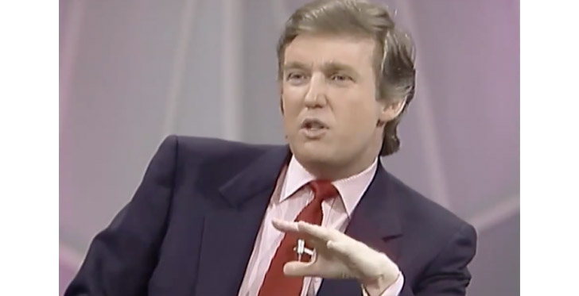

De grootouders van de kant van Trumps vader waren Duitse immigranten uit Kallstadt. Grootvader Friedrich Trumpf emigreerde in 1885 op 16-jarige leeftijd naar New York City waarna hij zijn Duitse naam verengelste tot Frederick Trump. Trumps moeder, Mary Anne MacLeod (1912-2000), werd in 1912 geboren in het dorp Tong op het eiland Lewis, dat zich aan de westkust van Schotland bevindt. In 1930, toen zij achttien jaar oud was, ontmoette zij Fred Trump (1905-1999) tijdens een vakantie in New York. Ze trouwden in 1967. Trump werd geboren op 14 juni 1946 in Queens, een borough van New York. Hij was het vierde van de vijf kinderen van Fred Trump en Mary Anne MacLeod. Donald Trumps oudste broer, Fred Jr., stierf in 1981 op 43-jarige leeftijd. Toen Donald Trump in Jamaica Estates woonde, ging hij naar The Kew-Forest School in Forest Hills, waar zijn vader lid was van de raad van bestuur. Sommige van zijn broers en zussen gingen ook naar die school. Toen Trump dertien jaar was, werd hij van The Kew-Forest School geschorst wegens slecht gedrag. Zijn ouders stuurden hem naar de New York Military Academy, zodat hij zijn energie en zelfbewustzijn goed zou kunnen benutten. Op 17-jarige leeftijd behaalde hij de rang van kapitein. Trump begon in augustus 1964 met studeren aan de Universiteit van Fordham in The Bronx, voordat hij twee jaar later overstapte naar de Wharton School van de Universiteit van Pennsylvania. Hij maakte deze overstap omdat de Wharton School een van de weinige scholen in de Verenigde Staten was die een vastgoedstudie aanbood. Hij studeerde af in 1968 met een Bachelor of Science in de economie. Trump vervulde zijn dienstplicht gedurende de Vietnamoorlog, maar is nooit uitgezonden naar Vietnam. Uit archiefgegevens blijkt dat hij in zijn tijd als student (1964-1968) viermaal uitstel van de dienstplicht heeft gekregen. In een interview in 2011 op WNYW zei hij dat hij geluk had gehad, omdat hij een hoog oproepnummer had. Uit door de website The Smoking Gun opgevraagde documenten van de Selective Service bleek dat Trump niet eerder was opgeroepen door zijn vertraging als student en nadat hij medisch uitstel had gekregen. Deze factoren waren uiteindelijk de oorzaak dat hij werd uitgeloot, hoewel hij tevens een hoog nummer had.
